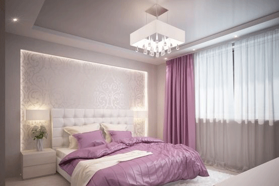
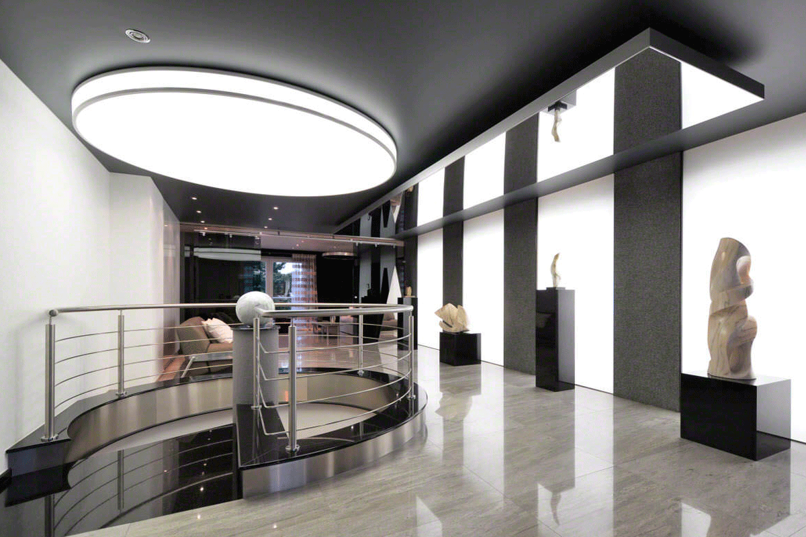
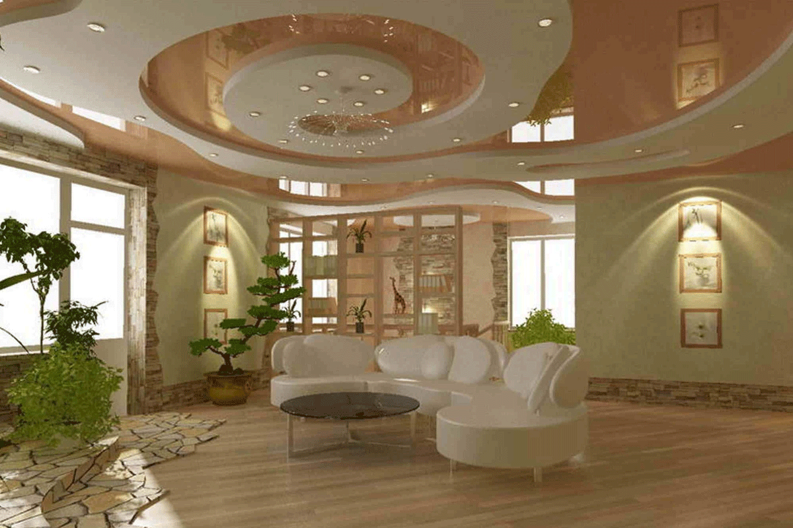
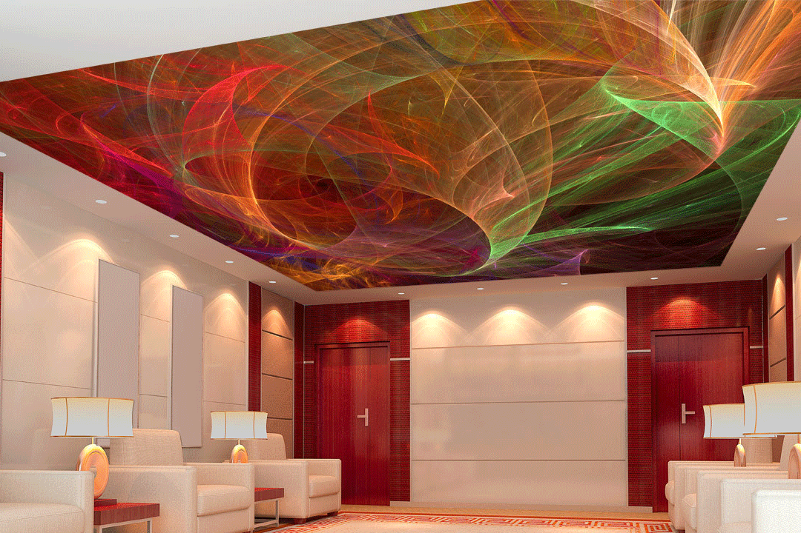
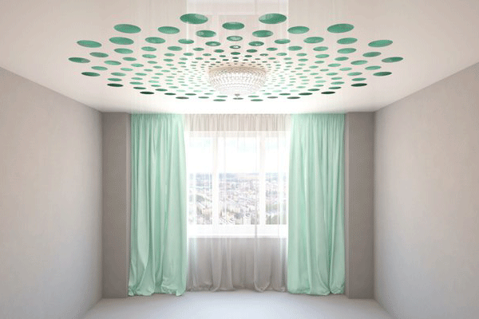

Фактуры натяжных потолков:
-

Глянцевые
Благодаря зеркальной поверхности они подходят для создания модного дизайна комнат, достижения необычного и идеального эстетичного внешнего вида. Отражающая способность таких потолков зрительно увеличивает объем помещения, что особо актуально в ограниченных пространствах, а также усиливает эффективность осветительных приборов.
-

Матовые
Матовая фактура внешне близка к поверхности классического беленого потолка, поскольку не отражает блики и свет, идеально ровная поверхность, недоступная для других решений, сообщает помещению сдержанную элегантность. Матовые фактуры применяют в больших помещения, в которых не стоит задача визуально увеличения пространства.
-

Сатиновые
Сатиновые натяжные потолки отличаются оригинальной текстурой, и неуловимым перламутровым отливом. Микрорельеф полотна обладает необычным свойством: небольшой эффект отражения позволяет создавать мягкую игру света. Безукоризненно ровная поверхность очень привлекательно смотрится как при естественном, так и при искусственном свете.
-

Тканевые
Выполнены из полиэстеровой ткани сложного плетения с полиуретановой пропиткой, прочность полотна в 15 раз выше, чем у пленки ПВХ.
Имеют матовую, немного шершавую поверхность и превосходно сочетаются с интерьерами в классическом стиле. На них можно наносить фотопечать и краску. Они не боятся порезов и отлично моются.
Дизайнерское использование натяжных потолков:
-

Многоуровневость
Многоуровневые натяжные потолки помогают воплотить в жизнь самые интересные дизайнерские проекты. Они позволяют конструировать потолки очень сложной конфигурации, с перепадами высот и разнообразной компоновкой осветительных элементов. Также натяжные многоуровневые потолки удобно использовать для зонирования помещений.
-

Фотопечать
Изображение наносится на полотно натяжного потолка с помощью интерьерного плоттера. Доступная ширина составляет 3 метра. Экосольвентные чернила, используемые для печати, соответствуют стандартам экологической безопасности. Они влагоустойчивы и не выгорают на солнце, поэтому четкость рисунка и насыщенность красок сохраняется в течении долгого времени.
-

Фигурный шов
Получается методом криволинейной спайки полотен. Комбинация различных цветов и фактур в одной плоскости позволяет реализовать интересные дизайнерские идеи. Аналогично многоуровневым решениям, фигурный шов помогает визуально выделить часть пространства и зонировать помещение, выгодно отличаясь минимальным уменьшением высоты потолка.
-

3d-дизайн
Прочная гибкость ПВХ-полотна позволяет выйти за пределы двух измерений обычного потолка и создавать дизайн в трехмерном пространстве.
Пространство для творчества ограничено скорее фантазией дизайнера и потребностями интерьера, чем возможностями материала. Натяжной потолок - идеальное средство для создания выразительного и яркого интерьера. -

Световые решения
Лаковые, полупрозрачные и прозрачные полотна предлагают целый ряд интересных и оригинальных световых решений: помещение может освещаться закарнизной подсветкой по периметру помещения, световыми кристаллами или даже всей поверхностью потолка с помощью световых панелей. С наиболее популярными вариантами можно ознакомиться в разделе свет.
-

Перфорация
Представляют собой двухуровневую конструкцию из основного слоя, обычно цветного, и расположенного под ним полотна с отверстиями, произвольной формы и размеров. За счет наличия двух уровней перфорированные потолки предоставляют возможность создавать интересные визуальные эффекты, изменяя объем и глубину помещения.